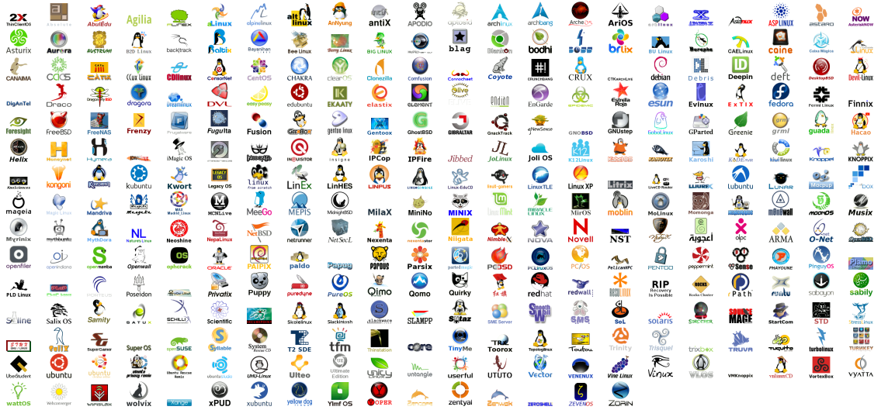
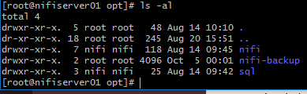

Linux Tech session
Chris Heathwood
10/10/2018
Why Linux?
It's open source
Other open source stuff runs on it
It's lightweight
It runs on almost anything
It's free
History
It started with Unix in the 1970s
Multi User, Multitasking Operating System
Dumb terminals
Built around the "Unix philosophy"
Birth of Linux in the 1990s
Linus Torvalds
Runs on x86 (originally 386)
Ported a lot of programs from unix
Kernel
The core of linux
All the same
One of the main things behind docker
Distros

Bucket loads of distros
All the same core
Focus on different areas
Different levels of support

Focused on size
Born out of linux distro for low powered hardware
Used a lot for docker
Most popular
Based on debian
Supported by canonical
A lot of businesses use this
Based down stream from redhat
Fairly easy to move to redhat at a later date
GUIs
It's not just about the command line
Gnome
KDE
Shells
There are lots of different shells
A shell is a program that takes commands and gives them to the operating system to be executed.
bash
tcsh/csh
ksh
zsh
fish
bash
Has it's own scripting language for shell scripts
.bashrc
Basic commands
pwd

ls -al
mv
cp
Useful programs
cat
grep
sed
awk
less/more
tail -f
Power of pipes
names.txtbob
fred
dave
cat names.txt | tail -n 1 | sed 's/.*/\u&/'.mds file/build/source/target/artifacts/hadoop-3.1.1.tar.gz:
MD5 = 0B 6A B0 6B 59 AE 75 F4 33 DE 38 77 83 F1 90 11
/build/source/target/artifacts/hadoop-3.1.1.tar.gz:
SHA256 = F837FE26 0587F716 29AAD1F4 FB671927 4E948111 DC96FFC5 A8E26F27 DEAC5602
curl $MIRROR/$HADOOP_BINARY_URL.mds | grep "^SHA256" | sed 's/ //g' | sed 's/SHA256=//'vi
Available everywhere
Has two modes view and edit
In view mode "gg" takes you to the start of a file
In view mode "GG" takes you to the end of a file
"/search" takes you to the search (this is a regex)
keep using "/" to keep searching
You can go in to edit mode in different ways
"i" insert here, "A" insert at the end of a line
"u" undoes a change
":q!" exits with no changes
":wq" writes changes
Admin
Access
ssh
sudo
sudo su
Permissions
users/groups and permissions
chown
chmod
Managing tasks
ps
jps
top